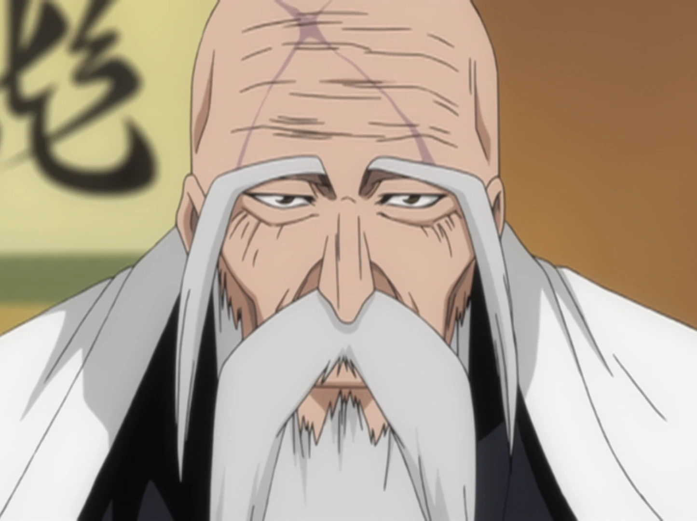
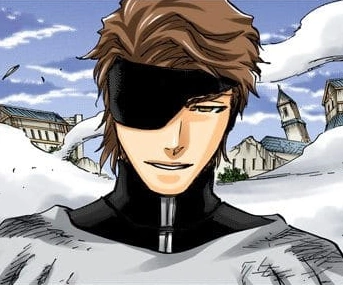
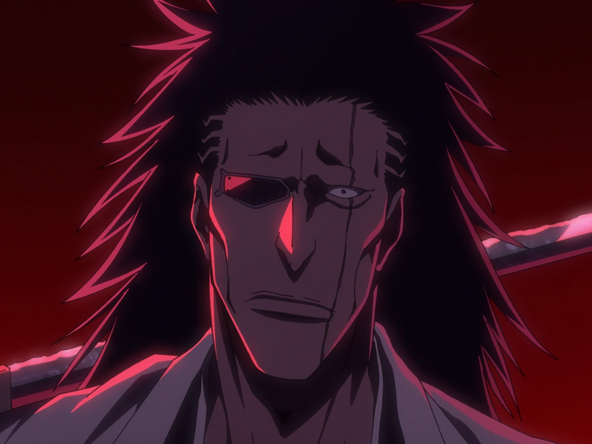

Conheça mais sobre esses personagens e suas origens
Ichigo
Potencial de Guerra : (Habilidade Latente) Hibrido que mistura a raça Shinigami, Quincy, Hollow e Humano.
Zanpakutō : Zangetsu (斬月), Lua Assassina

Yamamoto
Comandante Geral : Comandante de todo o Gotei 13
Zanpakutō : Ryūjin Jakka (流刃若火), Chama Fluente Semelhante a uma Lâmina
Urahara
Potencial de Guerra : (Inteligencia): Considerado uma ameaça pela sua mente genial e imprevisível
Zanpakutō : Benihime (紅姫), Princesa Carmesim

Aizen
Potencial de Guerra : (Pressão Espiritual): Energia espiritual colossal e quase infinita, além de seu intelecto genial e manipulação perfeita
Zanpakutō : Kyōka Suigetsu (鏡花水月), Flor no Espelho, Lua na Água

Zaraki
Potencial de Guerra : (Força de Combate): Reconhecido por sua força bruta monstruosa e instintos de luta
Zanpakutō : Nozarashi (野晒), Aquele Castigado pelo Tempo